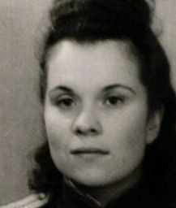

Быкова Анна Николаевна
Дата рождения28.09.1922
Место рожденияКрасноярский край, Балахтинский р-н, Балахта
Дата призыва24.06.1941
Место призываДаурский РВК, Красноярский край, Даурский р-н; Новосибирский РВК, Новосибирская обл., Новосибирский р-н
Место службы738 сп 134 сд (II)
Воинское званиелейтенант мед. сл.
НаградыОрден Красной Звезды; Орден Отечественной войны I степени; Орден Отечественной войны II степени; Медаль «За отвагу»; Медаль «За боевые заслуги»
ИсторияЛейтенант мед. сл., 28.09.1922, Красноярский край, Балахтинский р-н, Балахта, Место службы: 738 сп 134 сд (II). Именные списки частей
ID 11454752, источник: ЦАМО, фонд: 1356, опись: 2, дело: 30
Фельдшер, 28.09.1922, Красноярский край, Балахтинский р-н, Балахта, Место службы: 431 обс. Именные списки частей
ID 11362149, источник: ЦАМО, фонд: 431 ОБС 16 СК, опись: 70764с, дело: 3
Гв. военфельдшер, 20.12.1922, Саратовская обл., Макаровский р-н, с. Бароно-Михайловка, Место службы: Даурский РВК, Красноярский край, Даурский р-н, 134 сд 39 А КалФ
ID 122794362
ID 11454752, источник: ЦАМО, фонд: 1356, опись: 2, дело: 30
Фельдшер, 28.09.1922, Красноярский край, Балахтинский р-н, Балахта, Место службы: 431 обс. Именные списки частей
ID 11362149, источник: ЦАМО, фонд: 431 ОБС 16 СК, опись: 70764с, дело: 3
Гв. военфельдшер, 20.12.1922, Саратовская обл., Макаровский р-н, с. Бароно-Михайловка, Место службы: Даурский РВК, Красноярский край, Даурский р-н, 134 сд 39 А КалФ
ID 122794362